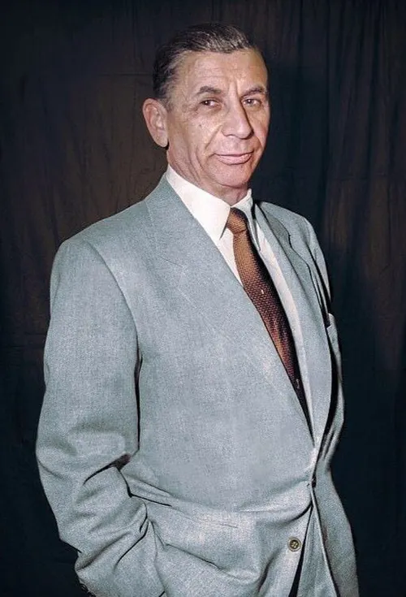
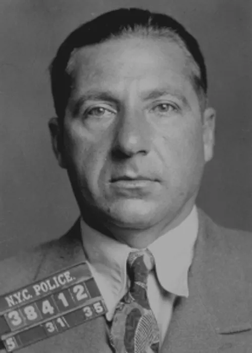

<!DOCTYPE html>
<html lang="fr">
    <head>
        <meta charset="utf-8">
        <meta name="viewport" content="width=device-width, initial-scale=1.0">
        <title>Cosa Nostra</title>
        <link rel="stylesheet" href="page2.css">
    </head>
</html>
<body>
      <header>
        
    <h1 class="title1-darkblue"><em>La Cosa Nostra:</em></h1>   
   <p><span class="gras">Vous voici donc sur cette page spécialement centrée sur la Cosa Nostra.</span><br> Au cours du siècle dernier
    une organisation criminelle s'est démarquée des autres dans la célèbre ville de New-York,<br> il s'gait de la Cosa Nostra.
    cette organisation vient à l'origine de Lucky Luciano et sa bande, à savoir son fidèle partenaire <br>Meyer Lanski, son ami d'enfance Frank Costello, le bagarreur 
    de la bande Siegle et pour finir le futur parrain de la famille Genovese,<br>Vito Genovese.</p>
    </header><hr>

<main><section class="columns">
  <div class="col">
    <h2>Charles "Lucky" Luciano:</h2>
    
    <p>Chef Supreme de la mafia italienne, né en Italie en Sicile près de Palerme puis émigre aux Etats-Unis. Cet homme est tout simplement le père du crime organisé aux Etats-Unis
    . Il a notamment fait fortune dans les années 20 avec la prohibition (trafic d'alcohol). Par la suite, il a restructuré la mafia américaine dans les années 30  et installé des règles entre les différentes familles 
    dans le but d'une bonne coopération et éviter ainsi les guerres intra-familiales. Il sera ensuite arreté et condamné pour proxénétisme avant d'etre libéré et explusé en Italie.
    </p>
  </div>
  <div class="col">
    <h2>Meyer Lanski:</h2>
    
    <p> Né à Grodno dans l'actuel Biélorussie puis émigrera aux Etats-Unis celui qu'on surnomme le comptable de la mafia est un personnage fascinant du crime organisé du XXè siècle. Meyer Lanski n'était ni un tueur ni un "parrain" mais plutot le cerveau financier de la mafia italo-américaine. Il a littéralement inventé le système financier du crime organisé.</p>
  </div>
  <div class="col">
    <h2>Frank Costello:</h2>
     
    <p>Né à Calabre en Italie puis émigre aux Etats-Unis Frank Costello avait pour surnom "The Prime Minister oh the Underworld". cet homme nétait pas non plus un tueur sanguinaire mais plutot un homme politique, un stratège, un diplomate et un manipulateur d'une intelligence rare.
        Après l'arrestation de Luciano, Costello va prendre le controle effectif des opérations et de la comission mais en 1957 il est victime d'une tentative d'assassinat par vito Genovese, à la suite de cela il va se retirer.
    </p>
  </div>
  <a href="index.html" target="_self">Retour à la page principale:</a>
</section>

</main>
</body>